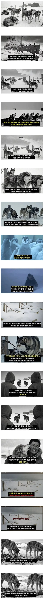

남극에 15마리 개를 버리고 간 일본
댓글
조건반사
한 겨울에 목줄 묶어놓고 아무 대책없이 1년동안 방치해놨다잖아
"며칠 뒤에 도착할 3관측대에 인계할 계획이였다"는 어따 팔아먹음
며칠뒤를 1년동안 방치한거면 완전 뒤지라는거지
문해력이 딸린거임 아님 그냥 시비를 걸고싶은거임..? 흠..
영포티 커뮤에 뭘바람?
걍 일본이면 무조건 발작하는 그세대가 많은것뿐 ㅋㅋㅋㅋ
목줄맨거까지야 생태계 문제도 있고 하니 그렇다 쳐도 밥은 좀 주고 가지..
yap유전자가 있으시데잖아
즉 고양이처럼 야생을 파괴하며 생존했다는 이야기
뭔 캣맘이 여기서 지랄을 하냐
제대로 읽어봐라
대체 어디서 야생 파괴가 나오는 거임?
캣맘 여기서 검거ㅋㅋ 쟤네들은 배설물이랑 사체 먹으면서 살아남았다고 나왔자나 켓맘 씹세끼야
어지럽다진짜
사료 뜯지않은 이유도 그 사료로 생태계 변화 생길수있어서 일거같은데
나중에 찾으려고 묶어놓는건 그렇다치고 식량은 왜 안개봉한거임 병신들이 그래놓고 뭔 오열
상부 지시나 메뉴얼에 없어서... 이지 않을까...
아마 이런 논리 아니였을까
1. 사람이 맞게 가면 -> 식량 개봉할 필요없음
2. 사람이 아주 늦게 가면 -> 어차피 개들은 개봉된 식량 먹다가 다 먹으면 굶어죽음
3. 사람이 조금 늦게 가면 -> 이 경우에는 개를 살릴 수 있음
그런데 기후 같은 조건때문에 3번일 가능성은 적다고 생각했나봄
또 정훈교육이노
개 대리러 가려고 기상악화에도 가야하나 항상 사람이 먼저지 개에 몰입하네
개에 몰입하는게 아니라 너무 잔혹하니까 그런거지.
현실적으로 기상문제와 대원 안전 때문에 계획에 차질이 생기고 개들을 묶고 식량개봉을 하지 않은 것도 당시 생태계 지식에 따른 조치일 수도 있겠지만 예기치 못한 상황에 무고하게 희생된 개들에 대한 연민이 드는 것도 사람이면 당연한 거지.
이런 거만 보면 개에 몰입하네 어쩌네 하면서 비꼬기만 하는 사람이 내 근처에 없어서 참 다행이라는 생각이 든다.
댓글에 금치산자 존나 많은거보니 병신도 인터넷 쓸수있게 해준 안드로이드랑 아이폰 만든 사람이 존경스럽다
그냥 쪽11바리 싫다고 그러는 거지 뭐